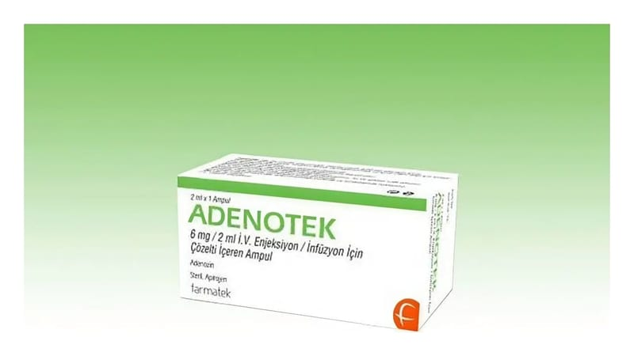

Adenotek 6 mg/2 ml IV Enjeksiyon Ve İnfüzyon İçin Çözelti İçeren Ampul, 10 Ampul

Ne için kullanılır
KT · Bölüm 1• ADENOTEK antiaritmik bir ilaçtır. • Her bir ml ADENOTEK 3 mg adenozin içerir. • ADENOTEK enjeksiyon veya infüzyon yolu ile uygulanır.
• 1 ve 10 adet ampul içeren ambalajlar ile kullanıma sunulmaktadır. • ADENOTEK kalbin üst ve alt odacıkları arasındaki elektriksel iletimi yavaşlatarak çalışır. Böylece "aritmi" denilen hızlı veya düzensiz kalp atışlarınız yavaşlar. • Test esnasında kullanımı: Doktorunuzun, sizin ne tür bir düzensiz kalp atımına (aritmi) sahip olduğunuzu belirlemesinde yardımcı olur. • ADENOTEK paroksismal supraventriküler taşikardi (SVT) veya Wolff-Parkinson- White Sendromu denilen bir aritmiye sahipseniz, kalp atışlarını normale döndürmek için kullanılmaktadır. • Eğer çocuğunuzda paroksismal supraventriküler taşikardi (PSVT) denilen bir kalp ritim bozukluğu varsa, çocuğunuzun kalp atışını normale döndürmek için ADENOTEK kullanılmaktadır.